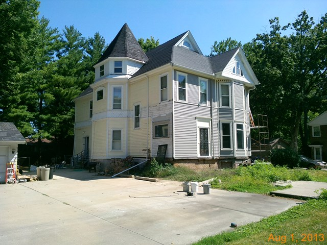

1304 E. Washington

- Layman and Dora Graham Residence
- Pilsbury's plans dated 1900 were apparently for major renovations.
- The house was built c1886, and arhitect is unknown.
- Graham was Secretary-Treasure of McLean County Coal Co. He started with them in 1867 as a bookkeeper.
- House was on the edge of town and on a very large lot.
- Streetcar interest, which helped to develop the block.